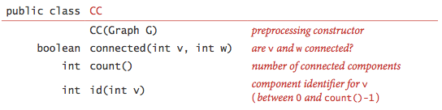
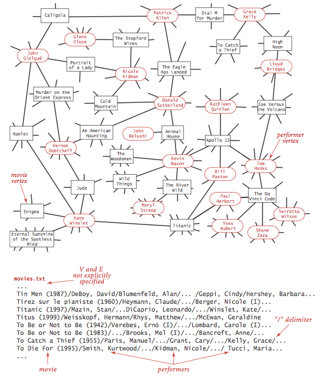

Undirected Graphs
§ Graphs.
A graph is a set of vertices and a collection of edges that each connect a pair of vertices. We use the names 0 through V-1 for the vertices in a V-vertex graph.

§ Glossary.
- A self-loop is an edge that connects a vertex to itself.
- Two edges are parallel if they connect the same pair of vertices.
- When an edge connects two vertices, we say that the vertices are adjacent to one another and that the edge is incident on both vertices.
- The degree of a vertex is the number of edges incident on it.
- A subgraph is a subset of a graph's edges (and associated vertices) that constitutes a graph.
- A path in a graph is a sequence of vertices connected by edges, with no repeated edges.
- A simple path is a path with no repeated vertices.
- A cycle is a path (with at least one edge) whose first and last vertices are the same.
- A simple cycle is a cycle with no repeated vertices (other than the requisite repetition of the first and last vertices).
- The length of a path or a cycle is its number of edges.
- We say that one vertex is connected to another if there exists a path that contains both of them.
- A graph is connected if there is a path from every vertex to every other vertex.
- A graph that is not connected consists of a set of connected components, which are maximal connected subgraphs.
- An acyclic graph is a graph with no cycles.
- A tree is an acyclic connected graph.
- A forest is a disjoint set of trees.
- A spanning tree of a connected graph is a subgraph that contains all of that graph's vertices and is a single tree. A spanning forest of a graph is the union of the spanning trees of its connected components.
- A bipartite graph is a graph whose vertices we can divide into two sets such that all edges connect a vertex in one set with a vertex in the other set.


§ Undirected graph data type.

The key method adj() allows client code
to iterate through the vertices adjacent to a given
vertex. Remarkably, we can build all of the algorithms that we
consider in this section on the basic abstraction embodied in adj().
We prepare the test data tinyG.txt, mediumG.txt, and largeG.txt, using the following input file format.

GraphClient.java contains typical graph-processing code.
§ Graph representation.
We use the adjacency-lists representation, where we maintain a vertex-indexed array of lists of the vertices connected by an edge to each vertex.

Graph.java implements the graph API using the adjacency-lists representation. AdjMatrixGraph.java implements the same API using the adjacency-matrix representation.
§ Depth-first search.
Depth-first search is a classic recursive method for systematically examining each of the vertices and edges in a graph. To visit a vertex
- Mark it as having been visited.
- Visit (recursively) all the vertices that are adjacent to it and that have not yet been marked.

§ Finding paths.
It is easy to modify depth-first search to not only determine whether there exists a path between two given vertices but to find such a path (if one exists). We seek to implement the following API:

To accomplish this, we remember the edge v-w that takes us to each
vertex w for the first time by setting edgeTo[w]
to v. In other words, v-w is the last edge on the known
path from w. The result of the
search is a tree rooted at the source; edgeTo[] is a parent-link
representation of that tree.
DepthFirstPaths.java
implements this approach.
§ Breadth-first search.
Depth-first search finds some path from a source vertex s to a target vertex v.
We are often interested in finding the shortest such path (one with
a minimal number of edges).
Breadth-first search is a classic method based on this goal.
To find a shortest path from s to v,
we start at s and check for v among all the vertices that we can
reach by following one edge, then we check for v
among all the vertices that we can reach from
s by following two edges, and so forth.
To implement this strategy, we maintain a queue of all vertices that have been marked but whose adjacency lists have not been checked. We put the source vertex on the queue, then perform the following steps until the queue is empty:
- Remove the next vertex
vfrom the queue. - Put onto the queue all unmarked vertices that are adjacent to
vand mark them.
BreadthFirstPaths.java
is an implementation of the Paths API that finds shortest paths.
It relies on Queue.java for the FIFO queue.
§ Connected components.
Our next direct application of depth-first search is to find the connected components of a graph. Recall from Section 1.5 that "is connected to" is an equivalence relation that divides the vertices into equivalence classes (the connected components). For this task, we define the following API:

CC.java uses DFS to implement this API.
Proposition. DFS marks all the vertices connected to a given source in time proportional to the sum of their degrees and provides clients with a path from a given source to any marked vertex in time proportional to its length.
Proposition. For any vertex v reachable from s,
BFS computes a shortest path from s to v
(no path from s to v has fewer edges).
BFS takes time proportional to V + E in the worst case.
Proposition. DFS uses preprocessing time and space proportional to V + E to support constant-time connectivity queries in a graph.
§ More depth-first search applications.
The problems that we have solved with DFS are fundamental. Depth-first search can also be used to solve the following problems:
- Cycle detection: Is a given graph acyclic? Cycle.java uses depth-first search to determine whether a graph has a cycle, and if so return one. It takes time proportional to V + E in the worst case.
- Two-colorability: Can the vertices of a given graph be assigned one of two colors in such a way that no edge connects vertices of the same color? Bipartite.java uses depth-first search to determine whether a graph has a bipartition; if so, return one; if not, return an odd-length cycle. It takes time proportional to V + E in the worst case.
- Bridge: A bridge (or cut-edge) is an edge whose deletion increases the number of connected components. Equivalently, an edge is a bridge if and only if it is not contained in any cycle. Bridge.java uses depth-first search to find time the bridges in a graph. It takes time proportional to V + E in the worst case.
- Biconnectivity: An articulation vertex (or cut vertex) is a vertex whose removal increases the number of connected components. A graph is biconnected if it has no articulation vertices. Biconnected.java uses depth-first search to find the bridges and articulation vertices. It takes time proportional to V + E in the worst case.
- Planarity: A graph is planar if it can be drawn in the plane such that no edges cross one another. The Hopcroft-Tarjan algorithm is an advanced application of depth-first search that determines whether a graph is planar in linear time.
§ Symbol graphs.
Typical applications involve processing graphs using strings, not integer indices, to define and refer to vertices. To accommodate such applications, we define an input format with the following properties:
- Vertex names are strings.
- A specified delimiter separates vertex names (to allow for the possibility of spaces in names).
- Each line represents a set of edges, connecting the first vertex name on the line to each of the other vertices named on the line.
The input file routes.txt is a small example.

The input file movies.txt is a larger example from the Internet Movie Database. This file consists of lines listing a movie name followed by a list of the performers in the movie.

- API.
The following API allows us to use our graph-processing routines for such input files.

- Implementation.
SymbolGraph.java implements the API.
It builds three data structures:
- A symbol table
stwithStringkeys (vertex names) andintvalues (indices) - An array
keys[]that serves as an inverted index, giving the vertex name associated with each integer index - A
GraphGbuilt using the indices to refer to vertices

- A symbol table
- Degrees of separation. DegreesOfSeparation.java uses breadth-first search to find the degree of separation between two individuals in a social network. For the actor-movie graph, it plays the Kevin Bacon game.